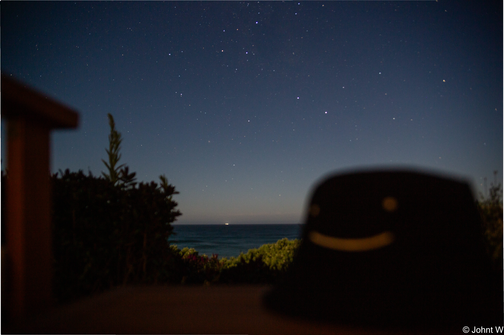

Intro
About me
Hi there! I'm Zhongtian Wang.
I'm currently a student of information technology, and was a mechanical engineering student before.
I'm here to free my ideas& thoughts, form a team, set up a goal, and fight for it!
Q: What does ‘Design Computing’ mean to you?
It’s a process from thoughts to products. It’s like using methods to make a floating balloon get to the ground to carry things. And of course, there are some techniques to do with “Computing”, things like computer-assisted design.

No pictures used in this website comes from network. All photos shot by myself.